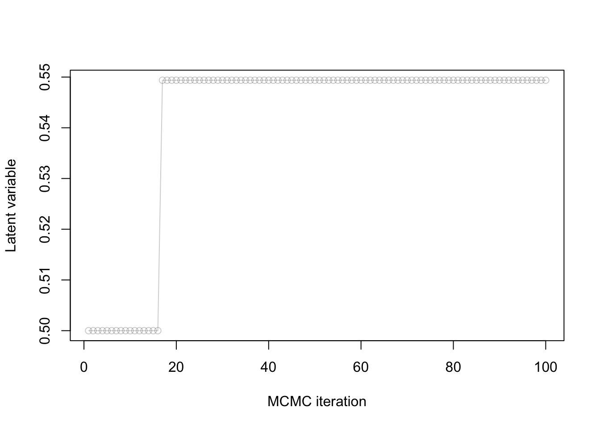

suppressPackageStartupMessages(require(rstan))Practice questions (Quiz 2)
Outline
Topics
- Representative example of questions to prep for Quiz 2.
Important note
Make sure to practice the similar page for Quiz 1 since quiz 2 will cover that material as well.
Libraries needed to run the example below
Model construction
Consider the following setup
- You have a cohort of 15 unemployed persons who are all starting a job search process at the same time.
- For each participant, you have collected 2 covariates: their age and their number of years of education.
- You contact the participants each day for 10 days and record the day they secured a new job.
- At the end of your study, 3 of the participants are still looking for a job.
Using the ~ notation
Define a Bayesian model to handle this dataset. Introduce all random variables, and specify for each its data type, if it observed or not.
Click for answer
The random variables are:
- Let \(y_1, y_2, \dots, y_{12}\) denote the job search times for the 12 participants who found a job in the study interval (10 days). These variables are observed.
- Let \(y_{13}, y_{14}, y_{15}\) denote the job search times for the other 3 participants. These variables are latent.
- Let \(f_i\) denote an indicator variable equal to one iff participant \(i\) found a job in the 10 days period, \(i \in \{1, 2, \dots, 15\}\). These variables are observed.
- Let \(x_{i,j}\), \(i \in \{1, 2, \dots, 15\}, j \in \{1, 2\}\) denote the age (\(j=1\)) or years of education (\(j=2\)) for participant \(i\). These variables are observed.
- Set \(x_{i,0} = 1\) to simplify the notation for the intercept.
- Let \(\theta_0\) denote and intercept parameter, \(\theta_1, \theta_2\), slope parameters for the age and number of years of education. These variables are latent.
One potential model is: \[\begin{align*} \theta_j &\sim \mathcal{N}(0, 100), \\ \phi &\sim {\mathrm{Exp}}(1/100), \\ \mu_i &= \exp\left(\sum_{j=0}^3 x_{i,j} \theta_j\right) \\ y_i &\sim {\mathrm{NegBinom}}\left(\mu_i, \phi\right), \\ f_i &= \mathbb{1}[y_i \le 10]. \end{align*}\]
Rao-blackwellization
Write the joint density of the model in the last part, before and after Rao-Blackwellization. You can introduce symbols for densities and CDFs, for example leave the density of the exponential as \(p_\text{Exp}(x; \lambda),\) and similarly use \(F_\text{Name}(\cdot; \cdot)\) to denote CDFs.
Click for answer
Before Rao-Blackwellization, we have:
\[\begin{align*} p(\phi, \theta_1, &\dots, \theta_3, y_1, y_2, \dots, y_{15}, f_1, f_2, \dots, f_{15}) = \\ &p_\text{Exp}(\phi; 1/100) \left( \prod_{j=0}^2 p_\text{Norm}(\theta_j; 0, 100) \right) \\ &\left( \prod_{i=1}^{15} p_\text{NB}\left(y_i; \mu_i, \phi\right) p_\text{Bern}(f_i; \mathbb{1}[y_i \le 10]) \right). \end{align*}\]
Rao-Blackwellizing the above: \[\begin{align*} \sum_{y_{13}=0}^\infty \sum_{y_{14}=0}^\infty \sum_{y_{15}=0}^\infty p(\phi, \theta_1, &\dots, \theta_3, y_1, y_2, \dots, y_{15}, f_1, f_2, \dots, f_{15}) = \\ &p_\text{Exp}(\phi; 1/100) \left( \prod_{j=0}^2 p_\text{Norm}(\theta_j; 0, 100) \right) \\ &\left( \prod_{i=1}^{12} p_\text{NB}\left(y_i; \mu_i, \phi\right) p_\text{Bern}(f_i; \mathbb{1}[y_i \le 10]) \right) \\ & \sum_{y_{13}=0}^\infty \sum_{y_{14}=0}^\infty \sum_{y_{15}=0}^\infty \left( \prod_{i=13}^{15} p_\text{NB}\left(y_i; \mu_i, \phi\right) p_\text{Bern}(f_i; \mathbb{1}[y_i \le 10]) \right) \\ =&p_\text{Exp}(\phi; 1/100) \left( \prod_{j=0}^2 p_\text{Norm}(\theta_j; 0, 100) \right) \\ & \left( \prod_{i=1}^{12} p_\text{NB}\left(y_i; \mu_i, \phi\right) p_\text{Bern}(f_i; \mathbb{1}[y_i \le 10]) \right) \\ & \prod_{i=13}^{15} \left( 1 - F_\text{NB}\left(10; \mu_i, \phi\right) \right). \end{align*}\] Where in the first equality, we “pushed the sums inside” since the first three groups of factors do not have the sums’ arguments in them, \(y_{13}, y_{14}, y_{15}\).
The second equality is explained in more details below (showing just the part that gets simplified to keep notation shorter): \[\begin{align*} \sum_{y_{13}=0}^\infty & \sum_{y_{14}=0}^\infty \sum_{y_{15}=0}^\infty \left( \prod_{i=13}^{15} p_\text{NB}\left(y_i; \mu_i, \phi\right) p_\text{Bern}(f_i; \mathbb{1}[y_i \le 10]) \right) \\ &= \prod_{i=13}^{15} \left( \sum_{y_i = 0}^\infty p_\text{NB}\left(y_i; \mu_i, \phi\right) p_\text{Bern}(f_i; \mathbb{1}[y_i \le 10]) \right) \\ &= \prod_{i=13}^{15} \left( \sum_{y_i = 0}^\infty p_\text{NB}\left(y_i; \mu_i, \phi\right) (1 - \mathbb{1}[y_i \le 10]) \right) \\ &= \prod_{i=13}^{15} \left( 1 - \sum_{y_i = 0}^\infty p_\text{NB}\left(y_i; \mu_i, \phi\right) \mathbb{1}[y_i \le 10] \right) \\ &= \prod_{i=13}^{15} \left( 1 - F_\text{NB}\left(10; \mu_i, \phi\right) \right). \end{align*}\]
The steps above are justified as follows:
- From line 1 to 2: associativity of addition and multiplication (for the same reason as e.g., \(\sum_i \sum_j a_i b_j = (\sum_i a_i)(\sum_j b_j)\) for any \(a_i\), \(b_j\)).
- From line 2 to 3: using the fact that \(f_i = 0\) for \(i \in \{13, 14, 15\}\), and that \(p_\text{Bern}(0; p) = (1 - p)\).
- From line 3 to 4: using the fact \(p_\text{NB}\) is a PMF and hence sums to one.
- From line 4 to 5: using the definition of a CDF.
Model debugging
Let:
- \(C(y)\) denote a 99% credible interval computed from data \(y\).
- Let \(y\) and \(\check y\) denote a real and synthetic (simulated) data respectively.
Suppose you observed the following:
- \(y_n \notin C(y_{\backslash n})\)
- \(\check y_n \notin C(\check y_{\backslash n})\)
- On both synthetic and real data, trace plots and ESS both look good.
- You replicated these experiments several times and always get the same results.
What would you do next? Justify your answer.
Click for answer
Referring to the workflow notes on goodness of fit and software checking, we have:
- From 3, we can exclude “slow mixing.”
- From 4, we can exclude “bad luck.”
- From 2, we therefore know there has to be a software defect (bug).
- Since 1 can be caused by either a software defect or a gross mis-specification, this item does not provide additional information.
Therefore, the next step would be to fix the bug(s).
Normalization constant
Consider the Bayesian model:
\[\begin{align*} X &\sim {\mathrm{Exp}}(1/100) \\ Y &\sim {\mathrm{Poisson}}(X). \end{align*}\]
When using MCMC, will the output change if, for \(x > 0\)…
- You used \(\check f(x) = \exp(-(1/100) x)\) instead of \(f(x) = (1/100) \exp(-(1/100) x)\) for the prior?
- You used \(\hat f(y|x) = x^y / y!\) instead of \(f(y|x) = \exp(-x) x^y / y!\) for the likelihood?
Click for answer
For 1, the output will not change as the MH ratio with \(\check f(x)\) is:
\[ \check r = \frac{\gamma(\tilde x)}{\gamma(x)} = \frac{ \exp(-(1/100) \tilde x) f(y|\tilde x)}{ \exp(-(1/100) \tilde x) f(y|x)} \]
whereas for \(f(x)\) we get:
\[ r = \frac{\gamma(\tilde x)}{\gamma(x)} = \frac{ (1/100) \exp(-(1/100) \tilde x) f(y|\tilde x)}{ (1/100) \exp(-(1/100) \tilde x) f(y|x)} \] So we see the \((1/100)\) factors on numerator and denominator cancel and we have \(r = \check r\).
For 2, the output would change since for \(\hat f(y|x)\) we have:
\[ \hat r = \frac{\gamma(\tilde x)}{\gamma(x)} = \frac{ f(\tilde x) \tilde x^y / y! }{ f(x) x^y / y! } \] whereas for \(f(x)\) we get:
\[ r = \frac{\gamma(\tilde x)}{\gamma(x)} = \frac{ f(\tilde x) \exp(-\tilde x) \tilde x^y / y! }{ f(x) \exp(-x) x^y / y! } \]
and hence \(r = \hat r \exp(x - \tilde x)\) so \(r\) and \(\hat r\) are not equal.
Intervals
Suppose you see the following output from a Stan MCMC fit object:
Inference for Stan model: anon_model.
1 chains, each with iter=2000; warmup=1000; thin=1;
post-warmup draws per chain=1000, total post-warmup draws=1000.
mean se_mean sd 2.5% 25% 50% 75% 97.5% n_eff Rhat
slope 0.42 0.00 0.04 0.34 0.40 0.42 0.45 0.51 719 1
sigma 0.24 0.00 0.04 0.18 0.21 0.24 0.27 0.33 639 1
prediction 0.64 0.01 0.27 0.14 0.47 0.64 0.81 1.20 1023 1
lp__ 21.32 0.06 1.04 18.46 20.94 21.62 22.09 22.36 331 1
Samples were drawn using NUTS(diag_e) at Thu Mar 14 14:41:50 2024.
For each parameter, n_eff is a crude measure of effective sample size,
and Rhat is the potential scale reduction factor on split chains (at
convergence, Rhat=1).- Report a 80% confidence interval to capture the Monte Carlo error for the posterior mean of the
predictionparameter.
Some of the following will be helpful in answering that question:
qnorm(0.8)[1] 0.8416212qnorm(0.9)[1] 1.281552qnorm(0.95)[1] 1.644854- Report a 50% credible interval for the
predictionparameter. You can ignore Monte Carlo error in this sub-question.
Click for answer
- We need to split the \(1-20\%\) into the two tails, hence we are looking for the 10% tail.
The radius of the interval is therefore:
0.01 * qnorm(0.9)[1] 0.01281552Hence the interval is \([0.64 \pm 0.01]\).
- A quantile-based credible interval gives \([0.47, 0.81]\).
Bias and consistency
Let \(\hat G_M\) denote a Monte Carlo estimator based on \(M\) iterations, providing an approximation for an intractable expectation, \(g^* = \mathbb{E}_\pi[g(X)]\).
- Define the notion of bias.
- Define the notion of consistency.
- In the context of Monte Carlo methods, what is more important, a bias of zero (unbiasness) or consistency? Why?
Click for answer
- \(\operatorname{Bias}(\hat G_M, g^*) = \mathbb{E}[\hat G_M] - g^*\).
- \(\hat G_M \to g^*\).1
- Consistency is more important. Consistency means that the error decreases as \(M\) increases. In contrast, even if a method is unbiased, it still leads to error due to its variance.
Stan-based prediction
Consider the code you wrote in Exercise 7 to perform Bayesian linear regression on galaxy distances and velocities:
data {
int<lower=0> N; // number of observations
vector[N] xs; // independent variable
vector[N] ys; // dependent variable
}
parameters {
real slope;
real<lower=0> sigma;
}
model {
// prior
slope ~ student_t(3, 0, 100);
sigma ~ exponential(0.001);
// likelihood
ys ~ normal(slope*xs, sigma);
}How would you modify this code to predict the velocity of a galaxy at distance 1.5? Hint: use the function normal_rng(mean, sd) to generate a normal random variable with the provided mean and standard deviation parameters.
Click for answer
data {
int<lower=0> N; // number of observations
vector[N] xs; // independent variable
vector[N] ys; // dependent variable
}
parameters {
real slope;
real<lower=0> sigma;
}
model {
// prior
slope ~ student_t(3, 0, 100);
sigma ~ exponential(0.001);
// likelihood
ys ~ normal(slope*xs, sigma);
}
generated quantities {
real prediction = normal_rng(slope*1.5, sigma);
}suppressPackageStartupMessages(require(ggplot2))
suppressPackageStartupMessages(require(dplyr))
df = read.csv(url("https://github.com/UBC-Stat-ML/web447/raw/0d6eaa346d78abe4cd125e8fc688c9074d6331d9/data/hubble-1.csv")) %>%
rename(distance = R..Mpc.) %>%
rename(velocity = v..km.sec.)
df$velocity = df$velocity/1000Run the above program using (the part below you are not expected to memorize):
fit = sampling(
hubble_predictions,
data = list(xs = df$distance, ys = df$velocity, N = length(df$distance)),
show_messages = FALSE,
open_progress = FALSE,
chains = 1,
iter = 2000
)fitInference for Stan model: anon_model.
1 chains, each with iter=2000; warmup=1000; thin=1;
post-warmup draws per chain=1000, total post-warmup draws=1000.
mean se_mean sd 2.5% 25% 50% 75% 97.5% n_eff Rhat
slope 0.42 0.00 0.04 0.33 0.39 0.42 0.45 0.51 701 1.01
sigma 0.24 0.00 0.04 0.18 0.22 0.24 0.26 0.33 770 1.00
prediction 0.64 0.01 0.26 0.12 0.47 0.64 0.81 1.11 863 1.00
lp__ 21.43 0.05 0.98 18.90 21.01 21.72 22.14 22.38 374 1.00
Samples were drawn using NUTS(diag_e) at Wed Mar 20 20:56:39 2024.
For each parameter, n_eff is a crude measure of effective sample size,
and Rhat is the potential scale reduction factor on split chains (at
convergence, Rhat=1).Metropolis-Hastings
Fill the two gaps in the pseudo code below:
- Initialize \(X^{(0)}\) arbitrarily
- For \(m = 1, 2, \dots, M\) do:
- Denote the proposal at iteration \(m \in \{1, 2, \dots, M\}\) by: \[\tilde X^{(m)}\sim q(\cdot | X^{(m-1)}).\]
- Compute the MH ratio: \[R^{(m)}= \frac{\gamma(\tilde X^{(m)})}{\gamma(X^{(m-1)})}.\]
- Sample an acceptance Bernoulli: \[A^{(m)}\sim \text{???}.\]
- If \(A^{(m)}= 1\), we accept the proposed sample: \[X^{(m)}= \text{???}\]
- Else, \(A^{(m)}= 0\), and we reject the proposed sample and stay at previous position: \[X^{(m)}= X^{(m-1)}.\]
Stan
- Explain the difference between the
parametersblock and thetransformed parametersblock in Stan. - Why do you think Stan uses 4 independent chains by default?
Click for answer
- The
parametersblock is used for random variable defined using~whereas thetransformed parametersblock, for those defined using=. - By having the chains initialized at different point, this supports the detection of slow mixing.
Reasoning about MH
Consider the MH algorithm where we use as proposal a normal centered at the current point with standard deviation \(\sigma_p\).
You observe the following trace plot:

- Is this chain mixing well?
- Why or why not?
- If it is not, what course of action do you recommend?
Click for answer
- No.
- Because the rejection rate is too high.
- Decrease \(\sigma_p\).
Irreducibility
Consider the following MH setup:
- \(\gamma(x) = \mathbb{1}[x \in \{1, 2, \dots, 10\}]\)
- \(q(x' | x) = \mathbb{1}[x' \in \{x-1, x+1\}]/2\).
- Define irreducibility.
- Prove that the MH algorithm is irreducible in this setup.
Click for answer
- See consistency of MH.
- Let \(x, x' \in \{1, 2, \dots, 10\}\) (these are the only points where \(\gamma(x) > 0\)). Suppose first \(x' > x\) (the case \(x' < x\) is done similarly). Pick \(m = x' - x\), and note \[\begin{align*} \mathbb{P}(X^{(m)}= x' | X^{(0)} = x) &> \mathbb{P}(X^{(m)}= x', X^{(m-1)} = x'-1, X^{(m-2)} = x'-2, \dots, X^{(1)} = x+1 | X^{(0)} = x) \\ &= (1/2)^m > 0. \end{align*}\]
MCMC diagnostics
Explain how to detect slow mixing from a rank plot.
Click for answer
When one of the chains has a shape that deviates from the uniform distribution, we can raise a warning that there is slow mixing.
MCSE
How would you proceed if you want to decrease Monte Carlo Standard Error (MCSE)?
Click for answer
Increase the number of MCMC iterations.
Debugging
You wish to write Stan model for logistic regression with normal priors on the parameters with prior variance 100.
Consider the following draft of a Stan model:
data {
int N
array[N] int y
}
model {
slope ~ normal(0, 100);
intercept ~ normal(0, 100);
for (i in 1:N) {
y[i] ~ bernoulli(inv_logit(intercept + slope * i));
}
}Identify as many bugs as you can, and correct each.
Click for answer
- Missing declaration of the parameters:
parameters {
real slope;
real intercept;
}- Missing two
;at the end of the lines indata. - The second argument of
normalin Stan is a standard deviation, not a variance, so it should beslope ~ normal(0, 10);. - Similarly for the
intercept.
The full correct code is taken from the clicker answers in the “hands on” page.
Effective sample size from asymptotic variance
Recall that the CLT for i.i.d. and Markov chains give us the following approximations:
- \(\sqrt{M} (\bar X_\text{Markov} - \mu) \approx \sigma_a G,\)
- \(\sqrt{n_e} (\bar X_\text{iid} - \mu) \approx \sigma G,\)
where \(M\) is the number of iterations, \(n_e\) is the effective sample size, \(\bar X_\text{Markov}\) and \(\bar X_\text{iid}\) are the MC estimators based on MCMC and i.i.d. sampling respectively, \(G\) is standard normal, \(\mu\), \(\sigma\) are the posterior mean and standard deviation, and \(\sigma_a\) is the asymptotic variance.
Use these two approximations to write a formula for the effective sample size based on \(\sigma\), \(\sigma_a\) and \(M\).
Click for answer
See lecture notes.
Independence: prior vs posterior
Suppose we place a prior where \(X_1\) and \(X_2\) are independent, say \(X_i \sim {\mathrm{Bern}}(0.5)\) independently. If we condition on some data \(Y\), will \(X_1\) and \(X_2\) always be independent under the posterior?
Click for answer
No. Consider for example \(Y = X_1 \text{ xor } X_2\), where recall that \(x \text{ xor } y\) iff exactly one of \(x_1, x_2\) is equal to one. Then under the posterior distribution that \((Y = 1)\), we have that \(X_1\) is completely determined by \(X_2\), i.e. \(\mathbb{P}(X_1 = x_1, X_2 = x_2 | Y = 1) \neq \mathbb{P}(X_1 = x_1 | Y = 1) \mathbb{P}(X_2 = x_2 | Y = 1)\). Many other counter examples are possible.
Footnotes
Where convergence is either almost sure (strong consistency), or in probability (weak consistency).↩︎